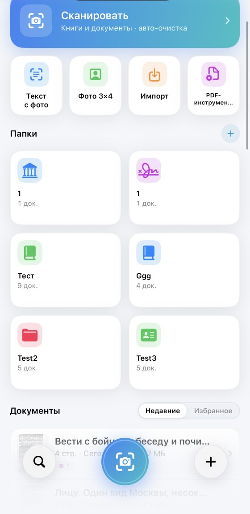

Очистка сканов
Убирает тени, жёлтую бумагу, пальцы в кадре и выпрямляет изгиб строк у корешка книги.
Снимите страницу телефоном — PageX уберёт тени, желтизну и пальцы, выпрямит лист и распознает текст. На iPhone и Mac.
Без регистрации · Без рекламы · Всё на устройстве
Снято обычным телефоном при комнатном свете. PageX автоматически убирает жёлтый фон, тени и выравнивает контраст текста.
Быстрый сканер на iPhone и студия глубокой очистки книг на Mac — без облаков и подписок за каждый шаг.
Убирает тени, жёлтую бумагу, пальцы в кадре и выпрямляет изгиб строк у корешка книги.
Точный OCR с полноценной поддержкой казахского языка (ә, ғ, қ, ң, ө, ұ, ү, һ, і), русского и английского.
Навёл камеру, снял — и сразу готовый редактируемый текст: скопировать, отправить или перевести.
3×4, паспорт, визы, Green Card (DV Lottery) с заменой фона и листом для печати 10×15 или A4.
Страницы 01, 02, 03 по порядку, цветные папки с иконками, теги, поиск по тексту и защита Face ID.
PDF с текстовым слоем, Word (.docx), TXT, JPG и длинное изображение для удобной отправки в мессенджеры.
Очистка, распознавание текста и фото на документы работают полностью локально на вашем устройстве.
Понятный интерфейс с инструментами на виду, папками и живым просмотром фильтров.

Нативное приложение для оцифровки больших книг, архивов и сложных PDF-документов.
Пакетная очистка папок со сканами и многостраничных PDF, контроль качества и автовыпрямление строк.
Автоматический поиск линии корешка, разделение разворотов на отдельные страницы и сохранение иллюстраций.
Поиск по тексту, объединение и разделение PDF, сжатие до нужного размера, подпись, сравнение и конвертация.
Отправляйте проект .pagex с исходниками по AirDrop или через iCloud Drive и продолжайте чистку на большом экране.
7 дней или 50 страниц — бесплатно, без ограничений. Потом — годовая подписка или покупка навсегда.
Скоро в App StoreПокупка через App Store. Подписку можно отменить в любой момент в настройках Apple ID.
PageX создан так, чтобы ваши сканы, паспорта и книги никогда не покидали устройство без вашего решения.
Никаких аккаунтов, паролей и сбора контактов. Открыли приложение — сразу работаете.
Очистка изображений, OCR и фото на документы выполняются локально процессором вашего устройства.
Нет рекламных баннеров, сторонних трекеров и скрытой телеметрии.
Сканируйте книги, документы и текст на iPhone и Mac — чисто, быстро и приватно.
Скоро в App Store